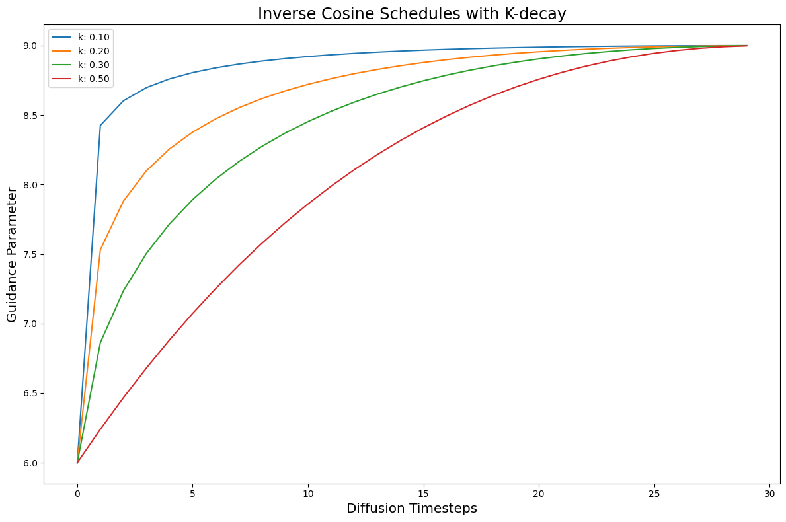
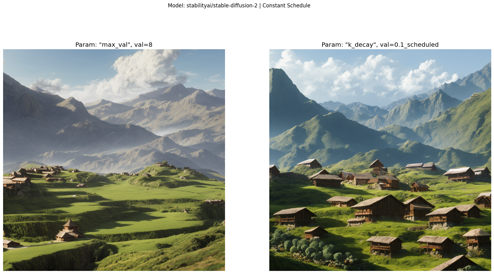
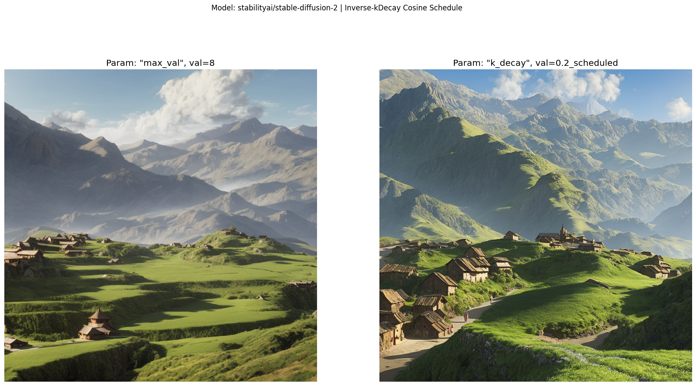
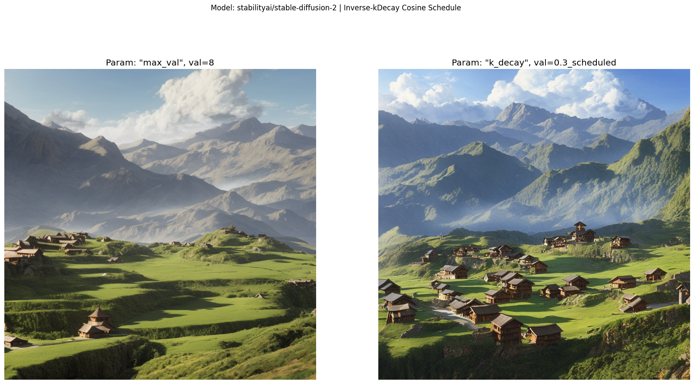
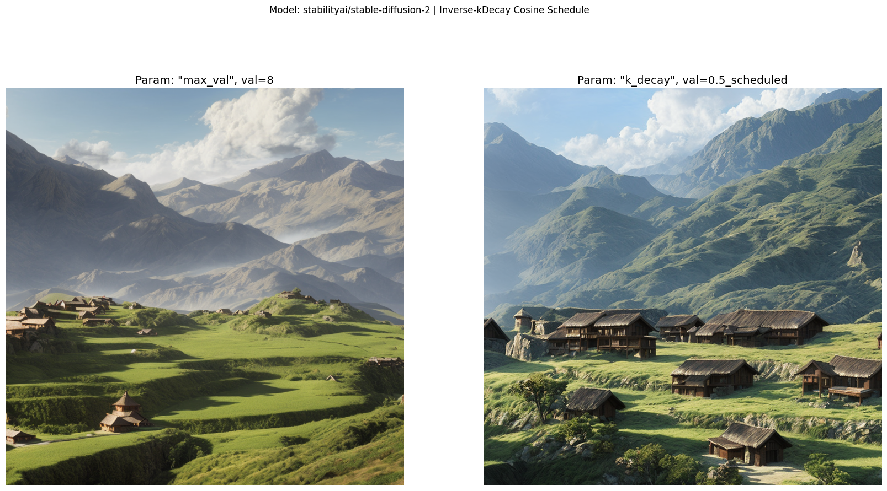

import os
import random
from typing import Callable, List, Dict
from functools import partial
import torch
import numpy as np
import matplotlib.pyplot as plt
import matplotlib.colors as mcolorsStable Diffusion v2 with k_diffusion and dynamic Classifier-free Guidance
diffusion
assifier-free guidance
deep learning
Running dynamic CFG for Stable Diffusion v2 with
k_diffusionSamplers.
Introduction
This notebook is an initial exploration of dynamic Classifier-free Guidance using the new Stable Diffusion v2 model.
To leverage the best samplers, we also integrate the k_diffusion library.
Python imports
We start with a few python imports.
2022-11-28 18:22:40.147192: I tensorflow/core/platform/cpu_feature_guard.cc:193] This TensorFlow binary is optimized with oneAPI Deep Neural Network Library (oneDNN) to use the following CPU instructions in performance-critical operations: AVX2 FMA
To enable them in other operations, rebuild TensorFlow with the appropriate compiler flags.
2022-11-28 18:22:40.869264: W tensorflow/compiler/xla/stream_executor/platform/default/dso_loader.cc:64] Could not load dynamic library 'libnvinfer.so.7'; dlerror: libnvinfer.so.7: cannot open shared object file: No such file or directory
2022-11-28 18:22:40.869333: W tensorflow/compiler/xla/stream_executor/platform/default/dso_loader.cc:64] Could not load dynamic library 'libnvinfer_plugin.so.7'; dlerror: libnvinfer_plugin.so.7: cannot open shared object file: No such file or directory
2022-11-28 18:22:40.869340: W tensorflow/compiler/tf2tensorrt/utils/py_utils.cc:38] TF-TRT Warning: Cannot dlopen some TensorRT libraries. If you would like to use Nvidia GPU with TensorRT, please make sure the missing libraries mentioned above are installed properly.Seed for reproducibility
seed_everything makes sure that the results are reproducible across notebooks.
# set the seed for rng
SEED = 4191151944
def seed_everything(seed: int) -> torch.Generator:
random.seed(seed)
os.environ['PYTHONHASHSEED'] = str(seed)
np.random.seed(seed)
generator = torch.manual_seed(seed)
torch.backends.cudnn.deterministic = True
torch.backends.cudnn.benchmark = False
return generator
# for sampling the initial, noisy latents
generator = seed_everything(SEED)Text prompt for image generations
Negative prompts appear to be very helpful in v2. At least, more helpful than they were for v1.x models.
Below, we also borrow a prompt and negative-prompt format that’s going around the Stable Diffusion discord. It seems to be a good starting point as the community figures out the new prompt structures.
# text prompt for image generations
prompt = "((a peaceful mountainside village in the Andes)), ((by Hayao Miyazaki)), studio lighting, High quality, professional, dramatic, cinematic movie still, very detailed, character art, concept art, focused, subsurface scatter"
# a good negative prompt
neg_prompt = "ugly, tiling, poorly drawn hands, poorly drawn feet, poorly drawn face, out of frame, mutation, mutated, extra limbs, extra legs, extra arms, disfigured, deformed, cross-eye, body out of frame, blurry, bad art, bad anatomy, blurred, text, watermark, grainy"Image and Sampler parameters
Here we set the number of denoising steps in the Diffusion process. We also pick the k_diffusion sampler, and the dimensions of the image.
# number of diffusion steps
num_steps = 30
# image dimensions
height = 1024
width = 1024
# set the k-diffusion scheduler
use_k_diffusion = 'k_dpmpp_sde'
hf_scheduler_kls = 'dpm_multi' # NOTE: only used for alpha_cumprod at the moment
# whether to use the Karras sigma schedule
use_karras_sigmas = True
# group the argument for generate function
gen_kwargs = {
'height': height,
'width': width,
'negative_prompt': neg_prompt,
'steps': num_steps,
'use_karras_sigmas': use_karras_sigmas,
}Gathering Stable Diffusion models
For now, the k_diffusion integration is only working with the full, 768x768 model. The plan is to eventually support the base model as well.
# group the different models to run
diffusion_runs = [
# Stable Diffusion 2
{'model_name': 'stabilityai/stable-diffusion-2',
'model_kwargs': {
'unet_attn_slice': True,
'better_vae': '',
'scheduler_kls': hf_scheduler_kls,
'use_k_diffusion': use_k_diffusion,
'generator': generator,
}},
]Creating Guidance schedules
We create Guidance schedules with the cf_guidance library.
However, it seems that our normalizations are broken in v2. This is likely due to the new v-prediction objective. So we avoid normalizations for now, and stick only with the Inverse kDecay schedules.
# helpers to create cosine schedules
from cf_guidance.schedules import get_cos_sched
# transformations for classifier-free guidance
from cf_guidance.transforms import GuidanceTfm #, BaseNormGuidance, TNormGuidance, FullNormGuidanceSchedule parameters
Given how much the prompts have changed in v2, we are back in fresh exploration territory as to what the best parameters should be. Exciting times!
Overall, it seems that the Guidance scale range is broader new. Folks are getting good results with low CFG (3-5) or with higher values (9+). This is likely very prompt and negative-prompt dependent. We should know more as the stability.ai team releases their guides and tips.
# Default schedule parameters from the blog post
######################################
baseline_g = 8 # default, static guidance value
max_val = 9 # the max scheduled guidance scaling value
min_val = 6 # the minimum scheduled guidance value
num_warmup_steps = 0 # number of warmup steps
warmup_init_val = 0 # the intial warmup value
num_cycles = 0.5 # number of cosine cycles
k_decay = 1 # k-decay for cosine curve scaling
# group the default schedule parameters
DEFAULT_COS_PARAMS = {
'max_val': max_val,
'num_steps': num_steps,
'min_val': min_val,
'num_cycles': num_cycles,
'k_decay': k_decay,
'num_warmup_steps': num_warmup_steps,
'warmup_init_val': warmup_init_val,
}
######################################The functions below quickly builds different Guidance schedules. They are also re-used from the previous notebooks.
def cos_harness(default_params: dict, new_params: dict) -> dict:
'''Creates cosine schedules with updated parameters in `new_params`
'''
# start from the given baseline `default_params`
cos_params = dict(default_params)
# update the with the new, given parameters
cos_params.update(new_params)
# return the new cosine schedule
sched = get_cos_sched(**cos_params)
return sched
def create_expts(params: dict, schedule_func: Callable) -> List[Dict]:
'''Creates a list of experiments.
Each element is a dictionary with the name, value, and schedule for a given parameter.
A `title` field is also added for easy plotting.
'''
names = sorted(params)
expts = []
# step through parameter names and their values
for i,name in enumerate(names):
for j,val in enumerate(params[name]):
# create the experiment
expt = {'param_name': name,
'val': val,
'schedule': schedule_func(new_params={name: val})}
# name for plotting
expt['title'] = f'Param: "{name}", val={val}'
# add it to the experiment list
expts.append(expt)
return exptsStatic baselines
First we create the constant, baseline Guidances.
# create the baseline schedule with the new function
baseline_params = {'max_val': [baseline_g]}
baseline_func = lambda *args, **kwargs: [baseline_g for _ in range(num_steps)]
baseline_expts = create_expts(baseline_params, baseline_func)Improving the baseline with scheduled Guidance
Now we build the most promising schedule so far: Inverse kDecay with a fast warmup.
# creating the inverse kDecay cosine schedules
k_decays = [0.1, 0.2, 0.3, 0.5]
inv_k_params = {'k_decay': k_decays}
inv_k_func = partial(cos_harness, default_params=DEFAULT_COS_PARAMS)
inv_k_expts = create_expts(inv_k_params, inv_k_func)
# invert the schedules to turn them into a type of warmup
##TODO: move into the scheduler helper
for s in inv_k_expts:
s['schedule'] = [max_val - g + min_val for g in s['schedule']]
# put all schedules together
all_k_expts = inv_k_expts
Function to run the experiments
The previous notebooks ran one Diffusion model at a time. Now, we need to load the model as part of the pipeline.
# to load Stable Diffusion pipelines
from min_diffusion.core import MinimalDiffusion
# to plot generated images
from min_diffusion.utils import show_image, image_grid, plot_gridWARNING:jax._src.lib.xla_bridge:No GPU/TPU found, falling back to CPU. (Set TF_CPP_MIN_LOG_LEVEL=0 and rerun for more info.)To do this, we move the model loading code load_sd_model into the run function. We also add some memory cleanup at the end to free up the GPU for the next model.
def load_sd_model(model_name, device, dtype, revision, model_kwargs={}):
'''Loads the given `model_name` Stable Diffusion in `dtype` precision.
The model is placed on the `device` hardware.
The optional `generator` is used to create noisy latents.
Optional `model_kwargs` are passed to the model's load function.
'''
pipeline = MinimalDiffusion(model_name, device, dtype, revision, **model_kwargs)
pipeline.load()
return pipelinedef run(pipeline, prompt, schedules, gen_kwargs={},
guide_tfm=None, generator=None, show_each=False, test_run=False):
"""Runs a dynamic Classifier-free Guidance experiment.
Generates an image for the text `prompt` given all the values in `schedules`.
Uses a Guidance Transformation class from the `cf_guidance` library.
Stores the output images with a matching title for plotting.
Optionally shows each image as its generated.
If `test_run` is true, it runs a single schedule for testing.
"""
# store generated images and their title (the experiment name)
images, titles = [], []
# make sure we have a valid guidance transform
assert guide_tfm
print(f'Using Guidance Transform: {guide_tfm}')
# optionally run a single test schedule
if test_run:
print(f'Running a single schedule for testing.')
schedules = schedules[:1]
# run all schedule experiments
for i,s in enumerate(schedules):
# parse out the title for the current run
cur_title = s['title']
titles.append(cur_title)
# create the guidance transformation
cur_sched = s['schedule']
gtfm = guide_tfm({'g': cur_sched})
print(f'Running experiment [{i+1} of {len(schedules)}]: {cur_title}...')
with torch.autocast('cuda'):
img = pipeline.generate(prompt, gtfm, **gen_kwargs)
images.append(img)
# optionally plot each generated image
if show_each:
show_image(img, scale=1)
print('Done.')
return {'images': images,
'titles': titles}Generating the images
We put all of the pieces together to generate images for the different schedules and Diffusion models.
# stores the generated images
outputs = {}
# load the model on the GPU in full precision
device = 'cuda'
dtype = torch.float16
revision = "fp16"
# step through the Diffusion models
for dparams in diffusion_runs:
# parse out model name and its custom args
model_name = dparams['model_name']
model_kwargs = dparams['model_kwargs']
# view some info about the run
print(f'Running model: {dparams}')
print(f'Generation kwargs: {gen_kwargs}')
print(f'Using prompt: {prompt}')
# load the current Diffusion model
pipeline = load_sd_model(model_name, device, dtype, revision, model_kwargs=model_kwargs)
# run the baseline Guidance for this model
baseline_res = run(pipeline, prompt, baseline_expts, gen_kwargs=gen_kwargs,
guide_tfm=GuidanceTfm, generator=generator)
outputs[(model_name,'baseline')] = baseline_res
# run the scheduled guidances
base_norm_res = run(pipeline, prompt, all_k_expts, gen_kwargs=gen_kwargs,
guide_tfm=GuidanceTfm, generator=generator)
outputs[(model_name,'scheduled')] = base_norm_res
# cleanup GPU memory for the next model
del pipeline
pipeline = None
torch.cuda.empty_cache()Running model: {'model_name': 'stabilityai/stable-diffusion-2', 'model_kwargs': {'unet_attn_slice': True, 'better_vae': '', 'scheduler_kls': 'dpm_multi', 'use_k_diffusion': 'k_dpmpp_sde', 'generator': <torch._C.Generator object at 0x7f492216fc30>}}
Generation kwargs: {'height': 1024, 'width': 1024, 'negative_prompt': 'ugly, tiling, poorly drawn hands, poorly drawn feet, poorly drawn face, out of frame, mutation, mutated, extra limbs, extra legs, extra arms, disfigured, deformed, cross-eye, body out of frame, blurry, bad art, bad anatomy, blurred, text, watermark, grainy', 'steps': 30, 'use_karras_sigmas': True}
Using prompt: ((a peaceful mountainside village in the Andes)), ((by Hayao Miyazaki)), studio lighting, High quality, professional, dramatic, cinematic movie still, very detailed, character art, concept art, focused, subsurface scatter
Enabling default unet attention slicing.
Using scheduler: <class 'diffusers.schedulers.scheduling_dpmsolver_multistep.DPMSolverMultistepScheduler'>
Using Guidance Transform: <class 'cf_guidance.transforms.GuidanceTfm'>
Running experiment [1 of 1]: Param: "max_val", val=8...
Using negative prompt: ugly, tiling, poorly drawn hands, poorly drawn feet, poorly drawn face, out of frame, mutation, mutated, extra limbs, extra legs, extra arms, disfigured, deformed, cross-eye, body out of frame, blurry, bad art, bad anatomy, blurred, text, watermark, grainy
NOTE: Generating with k-diffusion Samplers: k_dpmpp_sde
Using Karras sigma scheduleDone.
Using Guidance Transform: <class 'cf_guidance.transforms.GuidanceTfm'>
Running experiment [1 of 4]: Param: "k_decay", val=0.1...
Using negative prompt: ugly, tiling, poorly drawn hands, poorly drawn feet, poorly drawn face, out of frame, mutation, mutated, extra limbs, extra legs, extra arms, disfigured, deformed, cross-eye, body out of frame, blurry, bad art, bad anatomy, blurred, text, watermark, grainy
NOTE: Generating with k-diffusion Samplers: k_dpmpp_sde
Using Karras sigma scheduleRunning experiment [2 of 4]: Param: "k_decay", val=0.2...
Using negative prompt: ugly, tiling, poorly drawn hands, poorly drawn feet, poorly drawn face, out of frame, mutation, mutated, extra limbs, extra legs, extra arms, disfigured, deformed, cross-eye, body out of frame, blurry, bad art, bad anatomy, blurred, text, watermark, grainy
NOTE: Generating with k-diffusion Samplers: k_dpmpp_sde
Using Karras sigma scheduleRunning experiment [3 of 4]: Param: "k_decay", val=0.3...
Using negative prompt: ugly, tiling, poorly drawn hands, poorly drawn feet, poorly drawn face, out of frame, mutation, mutated, extra limbs, extra legs, extra arms, disfigured, deformed, cross-eye, body out of frame, blurry, bad art, bad anatomy, blurred, text, watermark, grainy
NOTE: Generating with k-diffusion Samplers: k_dpmpp_sde
Using Karras sigma scheduleRunning experiment [4 of 4]: Param: "k_decay", val=0.5...
Using negative prompt: ugly, tiling, poorly drawn hands, poorly drawn feet, poorly drawn face, out of frame, mutation, mutated, extra limbs, extra legs, extra arms, disfigured, deformed, cross-eye, body out of frame, blurry, bad art, bad anatomy, blurred, text, watermark, grainy
NOTE: Generating with k-diffusion Samplers: k_dpmpp_sde
Using Karras sigma scheduleDone.Results
Stable Diffusion v2 images
Here we plot all of the generated images.
The image on the left is the baseline with a static, constant Guidance.
The images on the right are the improvements with Guidance scheduling. Specifically, using the Inverse-kDecay cosine schedules with different values of k.
plot_all_results('stabilityai/stable-diffusion-2')



Conclusion
In this notebook we checked whether scheduling the Classifier-free Guidance improves the output images for Stable Diffusion v2.
At first glance, it seems that scheduling still helps! The scheduled generations have a lot more buildings and details. They also seem to better follow the prompt as well.
There is more work to figure out why our normalizations, which were previously working so well, now fall apart. It is likely due to the new v-prediction objective. We may have to rethink where and when to normalize.